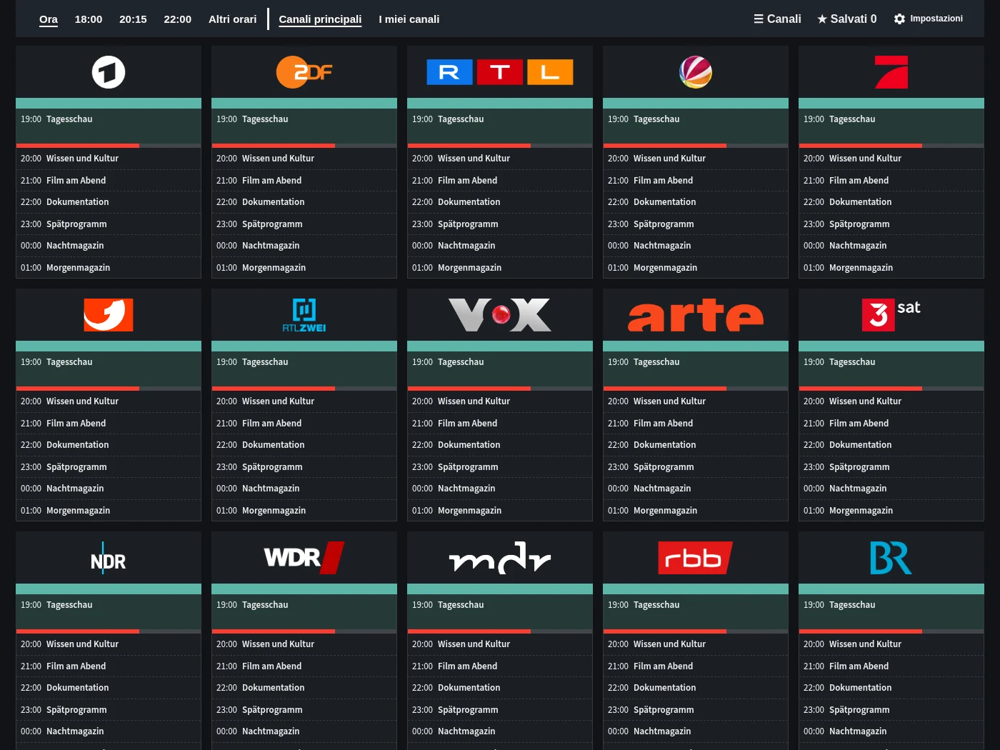
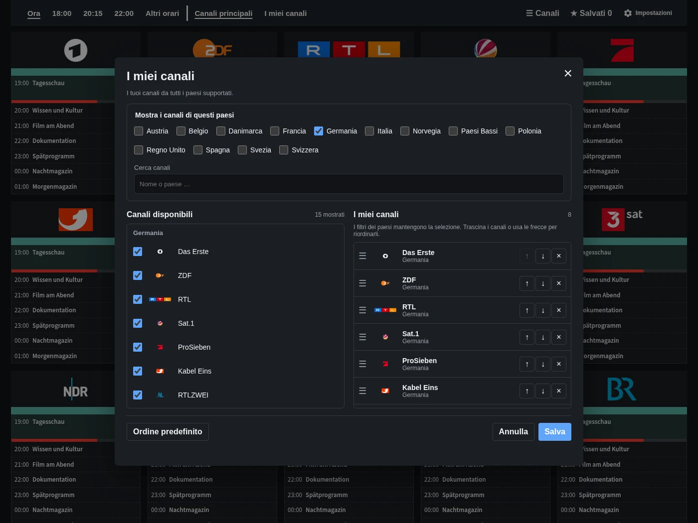
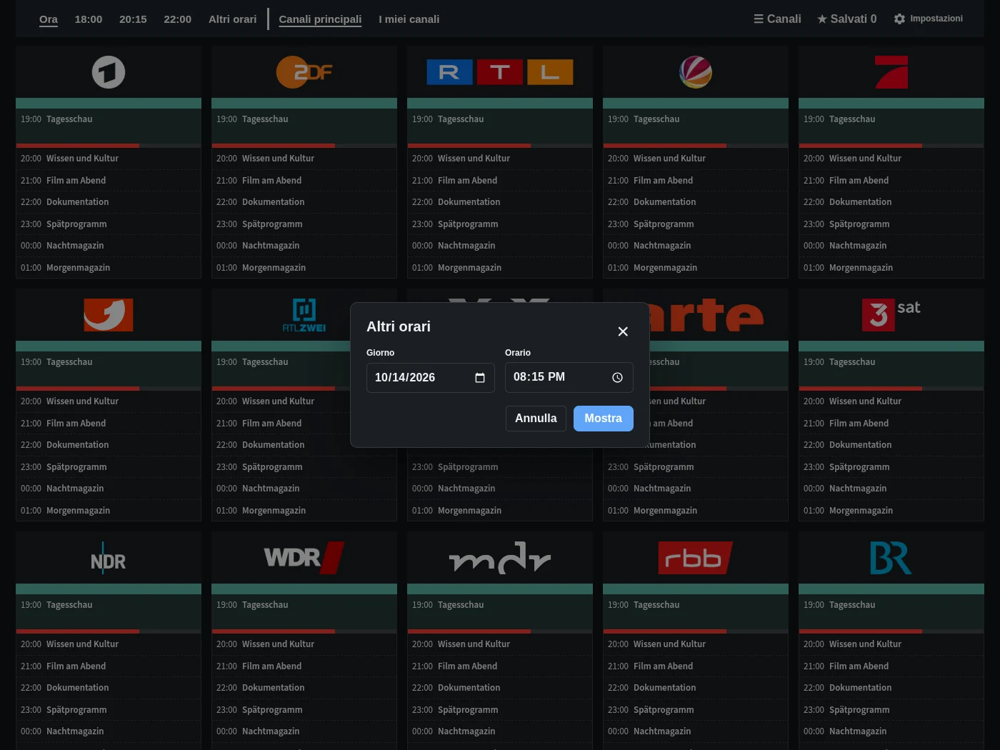
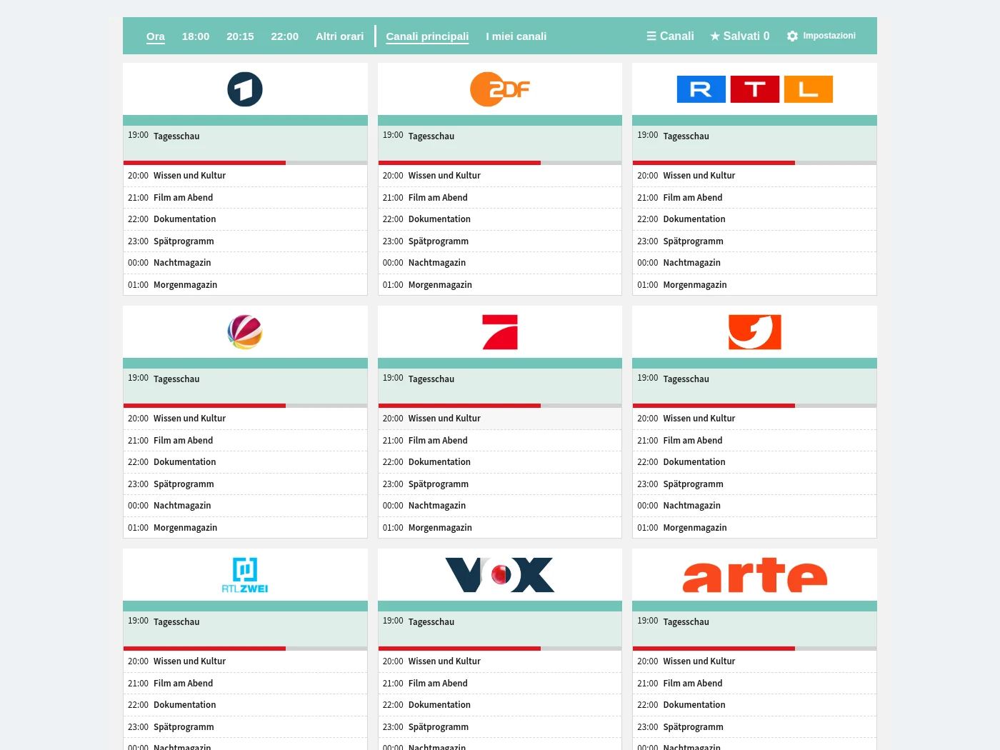

Guida TV
Canali, orari e programmi a colpo d’occhio. Vai direttamente a ora, 18:00, 20:15 o 22:00.
Scopri la guida TV, gli elenchi personali dei canali, la scelta degli orari e la scheda facoltativa.

Canali, orari e programmi a colpo d’occhio. Vai direttamente a ora, 18:00, 20:15 o 22:00.

Scegli i preferiti dai paesi disponibili e disponili nell’ordine che vuoi.

Scegli un’altra data e ora senza lasciare la guida.

Aggiungi TV Guide alla tua dashboard. La guida completa è disponibile anche nella barra laterale. L’immagine mostra la scheda in modalità chiara e scura.
Programmi di esempio. I titoli restano nella lingua originale.
Gratis e direttamente in Home Assistant.
Apri in HACS